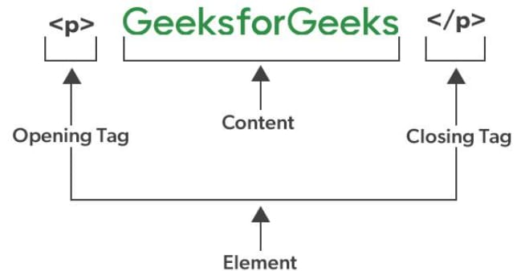

HTML stands for Hyper Text Markup Language, which is the core language used to structure content on the web. It organizes text, images, links, and media using tags and elements that browsers can interpret. As of 2025, over 95% of websites rely on HTML alongside CSS and JavaScript, making it a fundamental tool in modern web development.
•It is a markup language, not a programming language. This means it annotates text to define how it is structured and displayed by web browsers.
•It is a static language, meaning it does not inherently provide interactive features but can be combined with CSSfor styling and JavaScript for interactivity.
In a nutshell, HTML is all about organizing and displaying information on a webpage. We can think of it as the bonesstrong or structure of a webpage.
<!DOCTYPE html> <html lang="en"> <head> <meta charset="UTF-8"> <title>My First Webpage</title> </head> <body> <h1>Welcome to My Webpage</h1> <p>This is my first paragraph of text!</p> </body> </html>output:
The basic structure of an HTML page is shown below. It contains the essential building-block elements (i.e. doctype declaration, HTML, head, title, and body elements) upon which all web pages are created.
•<!DOCTYPE html >-This is the document type declaration, not a tag. It declares that the document is an HTML5 document.
•<html >- This is called the HTML root element. All other elements are contained within it.
•<head >- The head tag contains the "behind the scenes" elements for a webpage. Elements within the head aren't visible on the front end of a webpage. Typical elements inside the include:
•<title> Defines the title displayed on the browser tab.
•<meta> Provides information like the character set or viewport settings.
•<link> Links external stylesheets or resources.
•<style> Embeds internal CSS styles.
•<script>Embeds javaScript for functionality.
•<title>-The title is what is displayed on the top of your browser when you visit a website and contains the title of the webpage that you are viewing.
•<h2> -The <h2> tag is a second-level heading tag.
•<p> -The <p>tag represents a paragraph of text.
•<body> -The body tag is used to enclose all the visible content of a webpage. In other words, the body content is what the browser will show on the front end.
An HTML document can be created using an HTML text editor. Save the text file using the ".html" or ".htm" extension. Once saved as an HTML document, the file can be opened as a webpage in the browser.
HTML Elements and HTML Tag
HTML Elements and HTML Tags are related but distinct. An HTML elementis the complete structure, including the opening tag, content (if any), an d the closing tag (if applicable).
On the other hand, A tag is the actual keyword or name enclosed in angle brackets (< >) that tells the browser what kind of content to expect.

TABLE
| Tag | Description |
|---|---|
| <html> | The root element of an HTML document |
| <head> | Contains meta-information about the webpage |
| <body> | Contains the visible content of the webpage |
| <h1 to h6> | Headings of various levels(h1 being the largest) |
| <p> | Defines a paragraph |
| <a> | Defines a hyperlimk |
| <img> | Embed an image |
| <ul> | Defines an unordered list |
| <ol> | Defines a ordered list |
| <li> | Defines a list item |
| <table> | Defines a table |
| <form> | Defines an HTML form |
Unlike other programming languages, HTML does not show output on the any compiler. Web browsers is an compiler which show the results of an your HTML code. It reads HTML files and determines how to show content with the help of HTML tags. Any web browser (Google, Safari, Mozilla Firefox, etc) can be used to open a . HTML file and view the results.